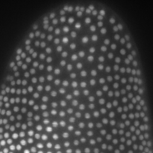

Post-processing, segmentation and labelling
2D segmentation in Fiji
In this exercise we will:
- Compare global and local thresholding methods and understand when each is useful.
- Improve segmentation using background subtraction and Gaussian smoothing.
- Refine masks using binary operations, including Fill Holes and Kill Borders.
- Generate labeled objects using MorphoLibJ’s Connected Components Labeling.
- Extract object-level measurements (area, perimeter, circularity, etc.).
- Visualize measurement values on labeled images.
- Filter segmented objects based on size or other properties.
These steps form a complete workflow: raw image → pre-processing → segmentation → cleanup → labeling → measurement → filtering
We’ll use MAX_Lund.tif as the example image https://zenodo.org/records/17986091
Requirements: - Fiji - MorphoLibJ plugin https://imagej.net/plugins/morpholibj
1. Open the image and inspect the histogram
- Start Fiji.
- Open the image:
File → Open… → MAX_Lund.tif
 - Open the histogram and visualization tools:
Image → Adjust → Brightness/Contrast…
You should see a histogram like this:

Idea: Thresholding chooses an intensity value that separates “foreground” from “background”. The histogram shows how many pixels exist at each intensity.
2. Try all global Auto Threshold methods
Global thresholding applies one single threshold to the whole image.
- With
MAX_Lund.tifactive, run:
Image → Adjust → Auto Threshold… - Choose:
- Method: Try all
- White objects
- Method: Try all
- Confirm.
Fiji generates a montage of all global methods:
{kind=link}
3. Prepare the image for Auto Local Threshold
Local thresholding requires 8-bit input.
- Select the original image:
Window → MAX_Lund.tif - Convert to 8-bit:
Image → Type → 8-bit
Now the image is ready for local methods.
4. Try all Auto Local Threshold methods
Local thresholding computes a threshold for each local neighborhood.
- Run:
Image → Adjust → Auto Local Threshold… - Choose:
- Method: Try all
- Radius: 15
- Parameter 1: 0
- Parameter 2: 0
- White objects
- Method: Try all
- Confirm.
{kind=link}
5. Improving segmentation with background subtraction and smoothing
Good segmentation often benefits from reducing background and noise first.
5.1 Remove background and apply Gaussian blur
- Open
MAX_Lund.png.
- Subtract background:
Process → Subtract Background…- Rolling ball radius: 50
- Rolling ball radius: 50
- Smooth noise:
Process → Filters → Gaussian Blur…- Sigma: 1
After preprocessing:
{kind=link}
6. Selecting a method: Local Otsu and binary cleanup
6.1 Apply Local Otsu thresholding
- Run:
Image → Adjust → Auto Local Threshold…- Method: Otsu
- Radius: 15
- Method: Otsu
Local Otsu mask:
{kind=link}
6.2 Refine the mask with binary operations
- Fill holes inside objects:
Process → Binary → Fill Holes - Slightly shrink objects:
Process → Binary → Erode - Optionally restore outlines:
Edit → Draw - Expand objects after erosion:
Process → Binary → Dilate
Refined mask:

6.3 Remove border-touching objects
- Remove partial objects touching image borders:
Plugins → MorphoLibJ → Filtering → Kill Borders
{kind=link}
7. Object labeling with MorphoLibJ
Convert each connected region into a uniquely labeled object:
Plugins → MorphoLibJ → Label → Connected Components Labeling
- Connectivity: 4
- Output type: 16-bit
Labeled objects:
{kind=link}
8. Measuring object properties
Quantifying each object is often the main goal after segmentation.
Run measurements:
Plugins → MorphoLibJ → Analyze → Analyze Regions
This extracts a number of morphological associated features. We will select:
- Area
- Pixel count
- Perimeter
- Circularity
- Ellipse geometry
- Bounding box

9. Visualizing label properties
Visualize one measurement (e.g. area) mapped onto the label image:
Plugins → MorphoLibJ → Label Images → Assign Measure to Label
Choose Area and apply a colormap.

Useful for:
- spotting unusually big/small objects
- deciding filtering thresholds
- checking measurement correctness
10. Filtering objects by size
Remove small objects based on size:
Plugins → MorphoLibJ → Label Images → Label Size Filtering
- Operation: Lower Than
- Size threshold: 100 px

3D segmentation in Napari
In this exercise we will:
- Use Napari to open a 3D image
- Use Napari assistant to visualize a workflow for 3D image segmentation and labelling
- Use region props to quantify morphological parameters and make colorcoded plots
These steps form a complete workflow:
raw image → pre-processing → segmentation → cleanup → labeling → measurement → filtering
We’ll use Lund.tif as the example image https://zenodo.org/records/17986091.
Requirements: - Everything you need is in the toml file in the Pixi/napari-assistant folder https://github.com/cuenca-mb/pixi-napari-assistant
0. Open Napari assistant using Pixi
In the terminal, go to the directory Pixi/napari-assistant and run:
pixi run assistant
1. Open a 3D stack
Drag and drop the file or
File → Open File
{kind=link}
We will be able to see and explore the stack, and we can change to a 3D rendering with the option Toogle 2D/3D view in the lower left button pannel. We can also make orthogonal views by clicking the button to the right Change order of the visible axis.
In the right pannel we will see the Assistant plugin, where it suggests operations in the appropriate order. The amount of operations and options depends on your installed plugins. Some of them are redundant.
2. Remove background, binarization and labeling
Select Remove Background → White top hat → radius = 10
{kind=link}
Then select Binarize → Threshold Yen, making sure to select the Result of White top-hat image.
{kind=link}
I recommend looking at the result in 3D.
{kind=link}
Finally, we can select Label → Connected component labeling, make sure to select the Result of Threshold image. We can additionally select the exclude on edges option.
{kind=link}
Some of them are stuck together. Let’s try and fix that.
3. Fix labels
Let’s select again the previous layer Result of Threshold. Then select Process labels → Binary erosion → radius = 3. This will reduce the objects of the binary segmentation.
{kind=link}
Now let’s recreate the labels Label → Connected component labeling, make sure to select the Result of Binary Erosion.
Then Process labels → Expand Labels → radius = 3. Explore the labels in 3D.
{kind=link}
Now we can accurately measure morphological features of these labels. You can close the assistant pannel now.
4. Measure morphological properties
Select Tools → Measure Tables → Object Features/Properties. Here make sure to select the Result of Expanded Labels image. You can select different features, includding intensity features extracted from the raw data. After running a table should appear which can be exported in csv format.
{kind=link}
{kind=link}
by double clicking any of the columns of this table, a new layer image will appear with colorcoded labels indicating the value of the selected measurement. Colormaps can be adjusted for preference.
{kind=link}